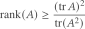
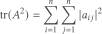

计算矩阵秩的下界
文章背景与核心概要
计算 \(n \times n\) 矩阵 \(A\) 的精确秩面临着诸多挑战：它是一个不连续函数、计算成本高昂（需要 \(O(n^3)\) 次运算），且在无法显式构建完整矩阵时极不实用。当不需要严格的精确秩时，通过秩-迹不等式（rank-trace inequality）推导出的稳定秩（stable rank）则提供了一个可靠的下界。
稳定秩克服了上述难题：它具有连续性，无需进行完整的矩阵乘法即可在 \(O(n^2)\) 时间内高效计算，并且能够与蒙特卡洛迹估计方法结合，适用于隐式矩阵。本文详细探讨了计算矩阵秩的困难、秩-迹不等式的原理及其三大优势，并附带了 Python 代码示例。
计算机算矩阵秩的困难 (Difficulties in Computing Rank)
假设你想知道一个 \(n \times n\) 矩阵 \(A\) 的秩（即线性无关的行数或列数）。这其中至少存在三个主要困难：
Suppose you want to know the rank of an \(n \times n\) matrix \(A\) (the number of linearly independent rows or columns). There are at least three primary difficulties:
- 不连续性： 秩不是矩阵的连续函数 [1]。由于秩是一个整数，矩阵中任意微小的变化都可能导致秩发生离散跳跃。计算 \(A\) 时产生的微小数值误差，就可能产生一个秩完全不同的矩阵。
- 计算复杂度： 求精确秩通常需要 \(O(n^3)\) 次运算，根据具体应用场景，这可能会带来也可能不会带来 prohibitive（过高）的计算成本。
- 隐式表示： 你可能无法以显式形式获得矩阵 \(A\)。你可能只能针对给定的向量 \(v\) 计算矩阵-向量乘积 \(Av\)，这使得构建整个矩阵 \(A\) 变得不切实际。
- Discontinuity: Rank is not a continuous function of a matrix [1]. Because rank is an integer, an arbitrarily small change in the matrix can cause a discrete change in the rank. A small numerical error in computing \(A\) could produce a matrix with a completely different rank.
- Computational Complexity: Finding the exact rank typically takes \(O(n^3)\) operations, which may or may not be prohibitive depending on the context.
- Implicit Representation: You may not have the matrix \(A\) in an explicit form. You might only be able to compute matrix-vector products \(Av\) for given vectors \(v\), making it impractical to construct the entire matrix \(A\).
秩-迹不等式 (The Rank-Trace Inequality)
如果你只需要知道矩阵 \(A\) 的秩是否超过某个阈值，那么一个下界可能就足够了。
假设 \(A\) 是一个厄米特矩阵（Hermitian matrix，这意味着如果它是实矩阵则为对称矩阵，如果它是复矩阵则等于其共轭转置）。秩-迹不等式表明：
If you only need to know whether the rank of \(A\) exceeds a certain threshold, a lower bound may suffice.
Suppose \(A\) is a Hermitian matrix (meaning \(A\) is symmetric if real, or equals its conjugate transpose if complex). The rank-trace inequality states that:

右侧的量被称为 \(A\) 的稳定秩（stable rank）。虽然它在严格的代数意义上并不是秩，但它为真实秩提供了一个可靠的下界，并成功解决了前面提到的三个挑战：
The quantity on the right-hand side is known as the stable rank of \(A\). While it is not a rank in the strict algebraic sense, it provides a dependable lower bound on the true rank and successfully addresses the three aforementioned challenges:
1. 稳定性 (Stability)
迹确实是矩阵的连续函数。因此，只要分母不为零，稳定秩也是连续的。对矩阵的微小扰动只会导致其稳定秩发生微小变化——这也是“稳定秩”这一名称的由来。
Trace is a continuous function of a matrix. Consequently, the stable rank is also continuous, provided the denominator is non-zero. A small perturbation to a matrix results in only a small change to its stable rank—hence the name "stable rank."
2. 高效性 (Efficiency)
尽管计算精确秩需要 \(O(n^3)\) 次运算，但计算稳定秩仅需 \(O(n^2)\) 次运算（尽管这一点并非显而易见）。
- 通过简单地对角线元素求和，计算 \(A\) 的迹只需 \(n\) 次运算。
- 直接将 \(A\) 自乘来求 \(\operatorname{tr}(A^2)\) 将需要 \(O(n^3)\) 次运算，从而抵消了任何效率优势。
然而，你可以通过计算幅值平方的逐元素之和来高效地计算 \(\operatorname{tr}(A^2)\)：
Although computing the exact rank requires \(O(n^3)\) operations, computing the stable rank takes only \(O(n^2)\) operations (though this is not immediately obvious).
- Computing the trace of \(A\) takes \(n\) operations by simply summing the diagonal elements.
- Squaring \(A\) directly to find \(\operatorname{tr}(A^2)\) would take \(O(n^3)\) operations, negating any efficiency advantage.
However, you can compute \(\operatorname{tr}(A^2)\) efficiently via the element-wise sum of squared magnitudes:

3. 构造 (Formation)
当矩阵 \(A\) 太大而无法放入内存，或者显式计算太慢时，你可以依赖仅通过矩阵-向量乘积探测 \(A\) 的方法。蒙特卡洛算法可用于估计 \(A\) 和 \(A^2\) 的迹，从而在不显式构造 \(A\) 的情况下估计稳定秩。
When the matrix \(A\) is too large to fit into memory or explicit computation is too slow, you can rely on methods that only probe \(A\) via matrix-vector products. Monte Carlo algorithms can be used to estimate the traces of \(A\) and \(A^2\), subsequently estimating the stable rank without forming \(A\) explicitly.
演示 (Demonstration)
以下 Python 代码说明了上面讨论的概念：
The following Python code illustrates the concepts discussed above:
import numpy as np
np.random.seed(20260904)
n = 5
B = np.random.randn(n, n)
A = B.T @ B + 1e-8 * np.eye(n) # Gram matrix plus a tiny shift => SPD
rank_A = np.linalg.matrix_rank(A)
tr_A = np.trace(A)
tr_A2 = np.trace(A @ A) # matrix product
sum_sq = np.sum(A * A) # element-by-element product
stable_rank = (tr_A ** 2) / tr_A2
print(f"A =\n{A}\n")
print(f"rank(A) = {rank_A}")
print(f"tr(A) = {tr_A:.12f}")
print(f"tr(A^2) direct = {tr_A2:.12f}")
print(f"tr(A^2) indirect = {sum_sq:.12f}")
print(f"stable rank = {stable_rank:.12f}")
输出 (Output)
Output
A =
[[ 1.09945682 0.4899665 0.98901845 0.66983113 -1.35006341]
[ 0.4899665 0.98531254 0.35067791 0.89757603 -0.72037507]
[ 0.98901845 0.35067791 4.31233926 0.94556225 -0.54819048]
[ 0.66983113 0.89757603 0.94556225 1.3494295 -1.33840786]
[-1.35006341 -0.72037507 -0.54819048 -1.33840786 3.54858332]]
rank(A) = 5
tr(A) = 11.295121449420
tr(A^2) direct = 51.035447533673
tr(A^2) indirect = 51.035447533673
stable rank = 2.499826585688
脚注 (Footnotes)
[1] 拓扑学论证： 从连通空间（例如 \(\mathbb{R}^{n \times n}\)）到离散空间（例如 \(\mathbb{Z}\)）的映射不可能是连续的。否则，值域中点的原像会将连通空间分割成不相交的开集，这违背了连通空间的定义。
[1] Topological argument: A map from a connected space (such as \(\mathbb{R}^{n \times n}\)) onto a discrete space (such as \(\mathbb{Z}\)) cannot be continuous. Otherwise, the inverse images of the points in the range would partition the connected space into disjoint open sets, violating the definition of a connected space.
本文 Computing a lower bound on matrix rank 最初发布于 John D. Cook。
The post Computing a lower bound on matrix rank first appeared on John D. Cook.